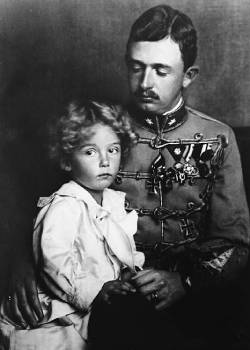

Carlos da Áustria
Agradeço ao nosso amável Deus por tudo que Ele me enviou.
Carlos I foi o último Imperador da Áustria de 1916 até 1918, também Rei da Hungria e Croácia como Carlos IV e Rei da Boêmia como Carlos III. Ele foi beatificado pela Igreja Católica em 2004, quando o papa João Paulo II declarou sua morte ter ocorrido em odor de santidade e reconheceu o seu papel como pacificador durante a guerra, colocando sempre sua fé antes de suas decisões políticas.
Informações
- Nascimento: 17 de agosto de 1887
- Morte: 1 de abril de 1922 (34 anos)
- Esposa: Zita de Bourbon-Parma
- Beatificação: 3 de outubro de 2004 por Papa João Paulo II
- Festa litúrgica: 21 de outubro
Galeria de Fotos

Para saber mais sobre o Beato Carlos da Áustria, clique aqui.